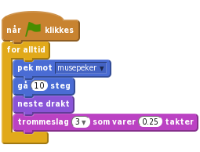
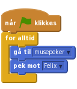
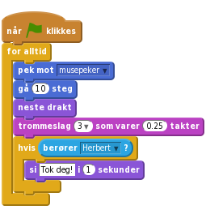
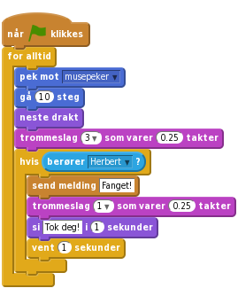
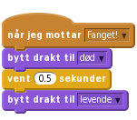
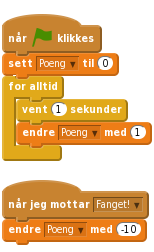

1.1
Felix og Herbert
Vi skal lage et spill hvor katten Felix skal fange musa Herbert. Du styrer Herbert med musepekeren og skal prøve å unngå å bli tatt av Felix. Jo lenger du unngår ham jo flere poeng får du, men blir du tatt, går poengsummen din ned.

Vi ønsker at katten Felix skal følge etter musepekeren.
i i hjørnet av Felix. .
.Bakgrunner og trykk på  for å importere en ferdig bakgrunn. Velg den bakgrunnen du vil.
for å importere en ferdig bakgrunn. Velg den bakgrunnen du vil.Klikk på Felix, velg Skript-fanen og lag dette skriptet:

Klikk på det grønne flagget.
Scratch lagrer alle prosjektene dine automatisk med jevne mellomrom. Det kan likevel være lurt å lagre manuelt innimellom.
Lagre nå.Nå ønsker vi at Felix skal jage musa Herbert i stedet for musepekeren.
 og velg figuren
og velg figuren Dyr/Mouse1.Herbert. (øverst mot midten av vinduet). Prøv seks klikk.
(øverst mot midten av vinduet). Prøv seks klikk.Gi Herbert dette skriptet:

Klikk på det grønne flagget.
Vi vil at Felix skal vite når han har fanget Herbert og fortelle det til oss.
Endre skriptet til Felix til dette:

Klikk på det grønne flagget.
I tillegg til at Felix sier noe, vil vi nå at Herbert blir forvandlet til et spøkelse når han fanges.
Endre skriptet til Felix slik at det sender en melding og lager en lyd når han fanger Herbert:

Drakter-fanen. og velg Fantasi/ghost2-a og trykke seks ganger på spøkelsesdrakten.levende og spøkelsesdrakten heter død.Gå til Skript-fanen, og lag et nytt skript for Herbert for å gjøre ham om til et spøkelse. Ikke slett det gamle skriptet:

Klikk på det grønne flagget.
La oss legge til en poengsum slik at vi kan se hvor flink man er til å holde Herbert i live. Vi begynner med poengsummen null og øker den med en for hvert sekund. Hvis Felix fanger Herbert, minker vi poengsummen med ti.
På Skript-fanen under kategorien Data, lag en ny variabel. Kall variabelen for Poeng, og la den gjelde for alle figurer.

Legg merke til at Poeng0 dukket opp øverst til venstre i spillet ditt.
Klikk på Scene til venstre på skjermen, ved siden av Figurer. Lag disse to skriptene på scenen:

Klikk på det grønne flagget.
Du er ferdig. Godt gjort. Nå kan du spille spillet!
Du kan dele spillet med familie og venner ved å trykke Legg ut på menylinjen.